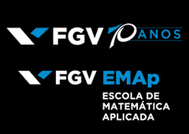
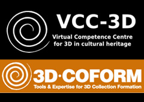
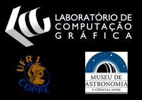

The FGV´s School for Applied Mathematics - FGV/EMAp - will celebrate
FGV´s 70th anniversary hosting the travelling exhibit "Reshaping History: a Future to our Past".
It demonstrates the range and versatility of the technologies under development,
discussing and illustrating the value of 3D in conservation and reconstruction.
The exhibit will take place at the new FGV´s Cultural Centre
located at Praia de Botafogo 190, Botafogo, Rio de Janeiro.

The travelling exhibit "Reshaping History" aims to increase professional awareness of the 3D-COFORM project,
the VCC-3D and the growing use of 3D in documenting and interpreting cultural heritage.
3D-COFORM project has bought together
cultural heritage and technical experts from across European Union.
The Virtual Competence Centre for 3D heritage VCC-3D
mission is to help and advise individuals and organisations
make objects and collections available digitally to a wider audience using 3D technologies.

The exhibit will also show a locally produced case.
The 3D Digitalization of a Scientific Instrument: The Bamberg Meridian Circle, is being leaded by Ricardo Marroquim from
Computer Graphics Laboratory LCG/COPPE/UFRJ. The instrument
is part of the Museu de Astronomia e Ciências Afins - MAST - collection.
During the exhibit, the general public will be welcomed to the Workshop on 3D technologies and its applications to the Cultural Heritage sector.
The program includes invited talks with experts and a discussion panel.